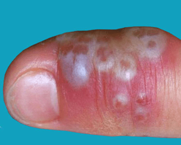
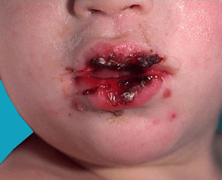

The herpes simplex virus, also known as HSV, is an infection that causes herpes. Herpes can appear in various parts of the body, most commonly on the genitals or mouth. There are two types of the herpes simplex virus.


The herpes simplex virus is a contagious virus that can be passed from person to person through direct contact. Children will often contract HSV-1 from early contact with an infected adult. They then carry the virus with them for the rest of their lives.
Infection with HSV-1 can happen from general interactions such as:
HSV-2 is contracted through forms of sexual contact with a person who has HSV-2. It is estimated that around 20 percent of sexually active adults in the United States are infected with HSV-2, according to the American Academy of Dermatology (AAD). While HSV-2 infections are spread through contact with a herpes sore, the AAD reports that most people get HSV-1 from an infected person who is asymptomatic, or does not have sores.